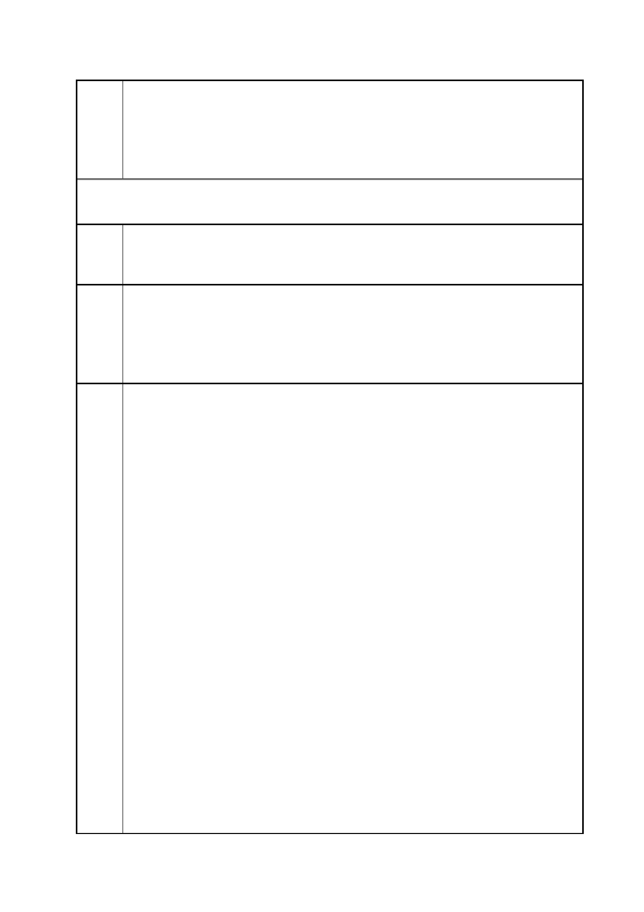

臺北市都市計畫委員會 公民或團體陳情意見綜理表
「變更臺北市信義區逸仙段二小段 33 地號等 21 筆土地（原臺北機廠）
案
名
工業區為創意文化專用區、特定專用區、道路及綠地用地主要計畫案」
及「擬定臺北市信義區逸仙段二小段 33 地號等 21 筆土地（原臺北機
廠）創意文化專用區、特定專用區、道路及綠地用地細部計畫暨劃定
都市更新地區計畫案」
102.12.17 第二次陳情
陳情
理由
建議
辦法
市府
回應
臺北機廠屬於全民所擁有之文化資產，本次都更計畫案係由臺鐵局委
託民間顧問公司草率規劃，從未徵詢鄰近居民、鐵道、都市計畫專家
之意見。
立即停止進行此都更案，退回臺鐵重審，並要求納入當地居民、鐵道、
都更專家之意見。對此一土地變更應重新認定，委員會納入各界專
家，重新進行都市規劃。
另本開發案中，特定專用區（三）供住宅使用，此一規劃是否有通過
環評？是否為蓋”豪宅”之計畫，請立即回應並說明。
一、有關建議重新檢視設置美術館必要性乙節，詳如編號 2 市府回應
內容。
二、有關建議詳加說明商業、住宅開發乙節，說明如下：本計畫留供
申請單位開發利用之土地，由於保留部分臺北機廠古蹟（澡堂）、歷
史建築（總辦公室、客車工場）及重要工業地景（東露天吊車、移車
台），未來須配合整體鐵道紋理進行保留、規劃與利用，細部計畫修
正後，並採取對整體鐵道文化景觀及文化資產衝擊儘可能減少之前提
下，適度配置與舊建物景觀相融合之新建物。特定專用區依區位條
件、文化資產、與周邊活動結合等潛力之不同，配合增訂之高度管制，
劃分下列分區：
（一）特定專用區（一）：區位良好且開發規模完整，可賦予較高強
度之發展，提供計畫區內鐵道文化與創意文化發展所需之相關文化展
演、商業購物、休閒娛樂、商務辦公、住宅等支援設施，以複合型態
的發展為主。除不得作煤氣、天然氣整壓站、加油站、液化石油氣加
氣站、特定零售業、殮葬服務業、施工機料及廢料堆置處理之使用，
其餘比照第三種商業區。使用強度為建蔽率 55%、容積率 333%。
（二）特定專用區(二)：以延續臺北文化體育園區之商業與藝文氛
圍，提供支援性功能為主。地面層透過挑高方式保留地面之扇形軌道
紋理，高樓層則提供商務、辦公、休閒、購物等功能。該區允許使用
項目與特定專用區（一）相同。使用強度為建蔽率 65%、容積率 648%。
（三）特定專用區（三）：鄰近松山高中及南側住宅社區，以提供住
宅使用為主之使用，允許使用項目比照第四種住宅區規定辦理。使用
強度為建蔽率 50%、容積率 315%。
第 24 頁/共 154 頁